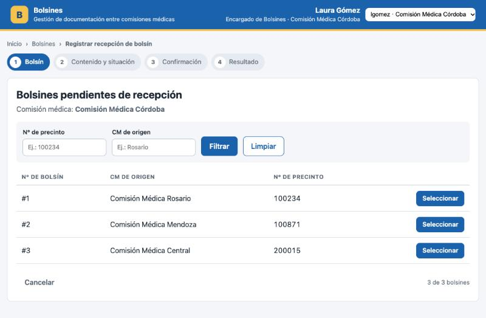
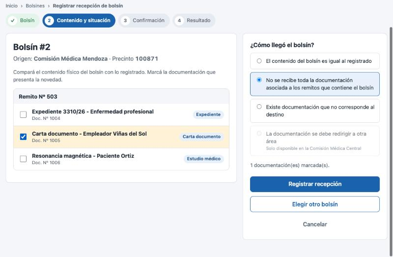
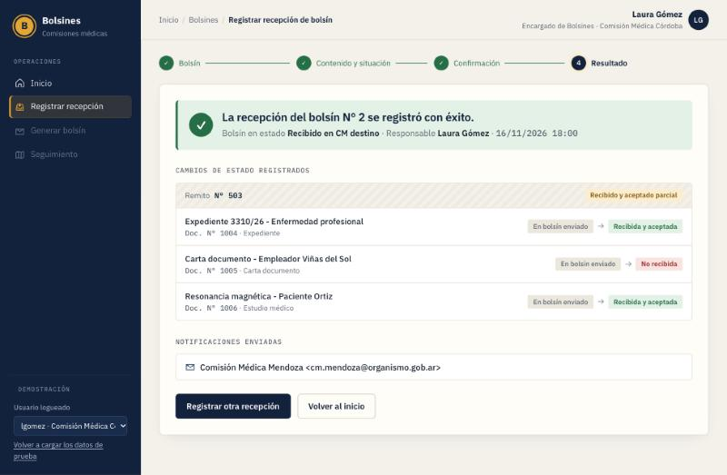

PPAI2026_3K2_G14_E2_Diseño.pdf.
Los diagramas se dibujan con Mermaid, por lo que hace falta conexión a internet al abrir el archivo.
Facultad Regional Córdoba
Ing. en Sistemas de Información
Proyecto Práctico de Aplicación Integrador
DSI
Proyecto Práctico de Aplicación Integrador
Entrega 2: Diseño
Caso de estudio: Bolsines
Tema de la entrega: Rediseño de la realización del CU 28 Registrar recepción de bolsín con el patrón State sobre la máquina de estados de Documentación, implementación y diseño de las interfaces de usuario
| Universidad / Facultad | Universidad Tecnológica Nacional – Facultad Regional Córdoba |
|---|---|
| Cátedra | Diseño de Sistemas de Información |
| Curso | 3K2 |
| Número de grupo | 14 (grupo par) |
| Número de entrega | 2 |
| Fecha de entrega | 17 de noviembre de 2026 |
| Docentes del curso | Ing. Cecilia Massano, Ing. Valeria Abdala, Ing. María Salomé Sánchez Cassia, Mateo Crespo |
| Docente tutor | Ing. Valeria Abdala |
Integrantes del grupo
| Apellido y nombre | Legajo | Correo electrónico |
|---|---|---|
| Altamirano Decicco, Juan Cruz | 403209 | juanetealtamirano@gmail.com |
| Arata Robledo, Santino | 406800 | santinoaratarobledo@gmail.com |
| Caramuti, Francisco | 406401 | franciscocaramuti@gmail.com |
| Monge, Jeremías | 404669 | jeremonge10@gmail.com |
| Pasquini, Lucas Valentín | 402256 | lucas.pasqui24@gmail.com |
| Porello, Juan | 402622 | juanporello11@gmail.com |
| Righetti, Agustín | 403683 | agurighetti@gmail.com |
| Scozzari Aldrey, Ignacio | 404929 | ignaciosaldrey@gmail.com |
| Vissani, Bruno | 406816 | Brunovissani47@gmail.com |
1. Identificación del patrón implementado
Patrón: State (Gamma et al., patrón de comportamiento), acordado con la docente tutora.
Se aplica sobre la clase Documentacion, cuya máquina de estados es la asignada al grupo
(grupo par: CU 28 Registrar recepción de bolsín – Máquina de estados de Documentación).
1.1 Problema que se propone resolver
Una documentación pasa por nueve estados (Registrada, En remito, En bolsín saliente, En bolsín enviado, Recibida y aceptada, No recibida, Recibida y rechazada, Para redirigir y De baja) y lo que puede hacerse con ella depende del estado en que se encuentra. En el CU 28, cuando el Encargado de Bolsines informa la situación del bolsín, cada documentación debe pasar de En bolsín enviado a Recibida y aceptada, No recibida, Recibida y rechazada o Para redirigir, y solo desde ese estado.
En la realización de análisis (Entrega 1) el estado era un objeto Estado con ámbito y nombre, y cada
transición se resolvía preguntando por él (esEnviado(), esRecibidoYAceptado()…) y
buscando el estado destino entre todos los estados. Esa lógica queda repartida entre el gestor y las entidades,
se convierte en condicionales que crecen con cada estado y no impide transiciones inválidas, por ejemplo aceptar
una documentación que nunca fue enviada.
1.2 Justificación
- El comportamiento depende del estado: el mismo mensaje (
aceptar(),rechazar()…) es válido o no, y lleva a un estado u otro, según el estado actual. Es el caso de aplicación del patrón State. - Elimina los condicionales:
Documentacion(Context) delega cada evento en su estado actual con un único mensaje polimórfico; no pregunta en qué estado está. - Transiciones explícitas y seguras: cada estado concreto redefine solo las transiciones que salen de él. Las demás heredan el comportamiento por defecto, que rechaza el evento. Así el código respeta exactamente la máquina de estados.
- Trazabilidad: en cada transición el estado concreto cierra el cambio de estado vigente y crea uno nuevo con el empleado responsable, como pide la regla de negocio Trazabilidad de la documentación y del Bolsín.
- Abierto a extensión: un estado nuevo es una clase nueva; no se modifica
Documentacionni el gestor.
| Rol del patrón | Clase del diseño |
|---|---|
| Context | Documentacion (atributo estadoActual) |
| State | EstadoDocumentacion (clase abstracta) |
| ConcreteState | Registrada, EnRemito, EnBolsinSaliente, EnBolsinEnviado, RecibidaYAceptada, NoRecibida, RecibidaYRechazada, ParaRedirigir, DeBaja |
| Cliente | DetalleRemito (a pedido de Remito y del GestorRecepcionBolsin) |
Bolsín y Remito conservan la clase Estado del modelo de dominio (ámbito y nombre), porque sus máquinas
de estados no se rediseñan en este caso de uso.
1.3 Máquina de estados de Documentación
Respecto de la Entrega 1 se agrega la transición Recibida y rechazada → Registrada: según la regla de negocio, la documentación rechazada vuelve al origen para asociarse a un nuevo remito. En el diagrama se resaltan las transiciones del CU 28.
stateDiagram-v2 direction TB [*] --> Registrada : CU7 Registrar documentación / new() Registrada --> EnRemito : CU15 Generar remito / asignarARemito() EnRemito --> Registrada : CU17 Cancelar remito / cancelarRemito() EnRemito --> EnBolsinSaliente : CU19 Generar bolsín / agregarABolsin() EnBolsinSaliente --> EnRemito : CU20 Modificar o CU21 Eliminar bolsín / quitarDeBolsin() EnBolsinSaliente --> EnBolsinEnviado : CU27 Registrar retiro / registrarRetiro() EnBolsinEnviado --> RecibidaYAceptada : CU28 [contenido igual] / aceptar() EnBolsinEnviado --> NoRecibida : CU28 [no se recibe] / noRecibir() EnBolsinEnviado --> RecibidaYRechazada : CU28 [no corresponde] / rechazar() EnBolsinEnviado --> ParaRedirigir : CU28 [redirigir a un área] / redirigir() NoRecibida --> Registrada : CU29 / retomarRegistro() NoRecibida --> DeBaja : CU31 / darDeBaja() RecibidaYRechazada --> Registrada : CU31 / retomarRegistro() ParaRedirigir --> RecibidaYAceptada : CU31 [es correcta] / aceptar() ParaRedirigir --> RecibidaYRechazada : CU31 [no es correcta] / rechazar() Registrada --> DeBaja : CU9 Eliminar documentación / darDeBaja() RecibidaYAceptada --> [*] DeBaja --> [*] classDef cu28 fill:#dbe9fb,stroke:#1f5fae,stroke-width:2px class EnBolsinEnviado,RecibidaYAceptada,NoRecibida,RecibidaYRechazada,ParaRedirigir cu28
Figura 1 – Máquina de estados de Documentación (resaltados: estados involucrados en el CU 28)
2. Vista estática de la realización de caso de uso de diseño
Por legibilidad, la vista estática se presenta en tres figuras: 2a, estructura del patrón State (Context y State); 2b, estados concretos; 2c, clases de interfaz, control y entidades del CU 28 que colaboran con el patrón. Los atributos y métodos son los del código fuente, con sus tipos y su visibilidad.
classDiagram
direction TB
class DetalleRemito {
<<entity>>
-areaCMCDestino: String
+esDeDocumentacion(numeroDocumentacion: Integer) boolean
+esDeAlgunaDocumentacion(numerosDocumentacion: List~Integer~) boolean
+aceptarDocumentacion(responsable: Empleado, fechaHora: LocalDateTime) void
+noRecibirDocumentacion(responsable: Empleado, fechaHora: LocalDateTime) void
+rechazarDocumentacion(responsable: Empleado, fechaHora: LocalDateTime) void
+redirigirDocumentacion(areaCMCDestino: String, responsable: Empleado, fechaHora: LocalDateTime) void
+esDocumentacionFaltanteORechazada() boolean
}
class Documentacion {
<<Context>>
-numero: Integer
-asunto: String
-fechaPase: LocalDate
+asignarARemito(responsable: Empleado, fechaHora: LocalDateTime) void
+cancelarRemito(responsable: Empleado, fechaHora: LocalDateTime) void
+agregarABolsin(responsable: Empleado, fechaHora: LocalDateTime) void
+quitarDeBolsin(responsable: Empleado, fechaHora: LocalDateTime) void
+registrarRetiro(responsable: Empleado, fechaHora: LocalDateTime) void
+aceptar(responsable: Empleado, fechaHora: LocalDateTime) void
+noRecibir(responsable: Empleado, fechaHora: LocalDateTime) void
+rechazar(responsable: Empleado, fechaHora: LocalDateTime) void
+redirigir(responsable: Empleado, fechaHora: LocalDateTime) void
+retomarRegistro(responsable: Empleado, fechaHora: LocalDateTime) void
+darDeBaja(responsable: Empleado, fechaHora: LocalDateTime) void
+esNoRecibida() boolean
+esRecibidaYRechazada() boolean
+agregarCambioEstado(cambioEstado: CambioEstadoDocumentacion) void
+setEstado(estado: EstadoDocumentacion) void
+esTuNumero(numero: Integer) boolean
}
class EstadoDocumentacion {
<<State>>
+getNombre()* String
+getDescripcion()* String
+asignarARemito(documentacion: Documentacion, cambiosEstado: List~CambioEstadoDocumentacion~, responsable: Empleado, fechaHora: LocalDateTime) void
+cancelarRemito(documentacion: Documentacion, cambiosEstado: List~CambioEstadoDocumentacion~, responsable: Empleado, fechaHora: LocalDateTime) void
+agregarABolsin(documentacion: Documentacion, cambiosEstado: List~CambioEstadoDocumentacion~, responsable: Empleado, fechaHora: LocalDateTime) void
+quitarDeBolsin(documentacion: Documentacion, cambiosEstado: List~CambioEstadoDocumentacion~, responsable: Empleado, fechaHora: LocalDateTime) void
+registrarRetiro(documentacion: Documentacion, cambiosEstado: List~CambioEstadoDocumentacion~, responsable: Empleado, fechaHora: LocalDateTime) void
+aceptar(documentacion: Documentacion, cambiosEstado: List~CambioEstadoDocumentacion~, responsable: Empleado, fechaHora: LocalDateTime) void
+noRecibir(documentacion: Documentacion, cambiosEstado: List~CambioEstadoDocumentacion~, responsable: Empleado, fechaHora: LocalDateTime) void
+rechazar(documentacion: Documentacion, cambiosEstado: List~CambioEstadoDocumentacion~, responsable: Empleado, fechaHora: LocalDateTime) void
+redirigir(documentacion: Documentacion, cambiosEstado: List~CambioEstadoDocumentacion~, responsable: Empleado, fechaHora: LocalDateTime) void
+retomarRegistro(documentacion: Documentacion, cambiosEstado: List~CambioEstadoDocumentacion~, responsable: Empleado, fechaHora: LocalDateTime) void
+darDeBaja(documentacion: Documentacion, cambiosEstado: List~CambioEstadoDocumentacion~, responsable: Empleado, fechaHora: LocalDateTime) void
+esNoRecibida() boolean
+esRecibidaYRechazada() boolean
#buscarCambioEstadoActual(cambiosEstado: List~CambioEstadoDocumentacion~) CambioEstadoDocumentacion
#crearCambioEstado(fechaHora: LocalDateTime, nuevoEstado: EstadoDocumentacion, responsable: Empleado) CambioEstadoDocumentacion
-transicionInvalida(accion: String) IllegalStateException
}
class CambioEstadoDocumentacion {
<<entity>>
-fechaHoraInicio: LocalDateTime
-fechaHoraFin: LocalDateTime
+CambioEstadoDocumentacion(fechaHoraInicio: LocalDateTime, estado: EstadoDocumentacion, responsable: Empleado)
+sosActual() boolean
+setFechaHoraFin(fechaHoraFin: LocalDateTime) void
}
class Empleado {
<<entity>>
-nombre: String
-apellido: String
-email: String
}
DetalleRemito --> "1" Documentacion : documentacion
Documentacion --> "1" EstadoDocumentacion : estadoActual
Documentacion "1" *--> "1..*" CambioEstadoDocumentacion : cambiosEstado
CambioEstadoDocumentacion --> "1" EstadoDocumentacion : estado
CambioEstadoDocumentacion --> "1" Empleado : responsable
EstadoDocumentacion ..> Documentacion
EstadoDocumentacion ..> CambioEstadoDocumentacion : crea
Figura 2a – Vista estática del CU 28: estructura del patrón State (Context y State)
classDiagram
direction LR
class EstadoDocumentacion {
<<State>>
}
class Registrada {
<<ConcreteState>>
+NOMBRE: String$
+getNombre() String
+getDescripcion() String
+asignarARemito(documentacion: Documentacion, cambiosEstado: List~CambioEstadoDocumentacion~, responsable: Empleado, fechaHora: LocalDateTime) void
+darDeBaja(documentacion: Documentacion, cambiosEstado: List~CambioEstadoDocumentacion~, responsable: Empleado, fechaHora: LocalDateTime) void
-crearEstadoEnRemito() EstadoDocumentacion
-crearEstadoDeBaja() EstadoDocumentacion
}
class EnRemito {
<<ConcreteState>>
+NOMBRE: String$
+getNombre() String
+getDescripcion() String
+cancelarRemito(documentacion: Documentacion, cambiosEstado: List~CambioEstadoDocumentacion~, responsable: Empleado, fechaHora: LocalDateTime) void
+agregarABolsin(documentacion: Documentacion, cambiosEstado: List~CambioEstadoDocumentacion~, responsable: Empleado, fechaHora: LocalDateTime) void
-crearEstadoRegistrada() EstadoDocumentacion
-crearEstadoEnBolsinSaliente() EstadoDocumentacion
}
class EnBolsinSaliente {
<<ConcreteState>>
+NOMBRE: String$
+getNombre() String
+getDescripcion() String
+quitarDeBolsin(documentacion: Documentacion, cambiosEstado: List~CambioEstadoDocumentacion~, responsable: Empleado, fechaHora: LocalDateTime) void
+registrarRetiro(documentacion: Documentacion, cambiosEstado: List~CambioEstadoDocumentacion~, responsable: Empleado, fechaHora: LocalDateTime) void
-crearEstadoEnRemito() EstadoDocumentacion
-crearEstadoEnBolsinEnviado() EstadoDocumentacion
}
class EnBolsinEnviado {
<<ConcreteState>>
+NOMBRE: String$
+getNombre() String
+getDescripcion() String
+aceptar(documentacion: Documentacion, cambiosEstado: List~CambioEstadoDocumentacion~, responsable: Empleado, fechaHora: LocalDateTime) void
+noRecibir(documentacion: Documentacion, cambiosEstado: List~CambioEstadoDocumentacion~, responsable: Empleado, fechaHora: LocalDateTime) void
+rechazar(documentacion: Documentacion, cambiosEstado: List~CambioEstadoDocumentacion~, responsable: Empleado, fechaHora: LocalDateTime) void
+redirigir(documentacion: Documentacion, cambiosEstado: List~CambioEstadoDocumentacion~, responsable: Empleado, fechaHora: LocalDateTime) void
-crearEstadoRecibidaYAceptada() EstadoDocumentacion
-crearEstadoNoRecibida() EstadoDocumentacion
-crearEstadoRecibidaYRechazada() EstadoDocumentacion
-crearEstadoParaRedirigir() EstadoDocumentacion
}
class RecibidaYAceptada {
<<ConcreteState>>
+NOMBRE: String$
+getNombre() String
+getDescripcion() String
}
class NoRecibida {
<<ConcreteState>>
+NOMBRE: String$
+getNombre() String
+getDescripcion() String
+esNoRecibida() boolean
+retomarRegistro(documentacion: Documentacion, cambiosEstado: List~CambioEstadoDocumentacion~, responsable: Empleado, fechaHora: LocalDateTime) void
+darDeBaja(documentacion: Documentacion, cambiosEstado: List~CambioEstadoDocumentacion~, responsable: Empleado, fechaHora: LocalDateTime) void
-crearEstadoRegistrada() EstadoDocumentacion
-crearEstadoDeBaja() EstadoDocumentacion
}
class RecibidaYRechazada {
<<ConcreteState>>
+NOMBRE: String$
+getNombre() String
+getDescripcion() String
+esRecibidaYRechazada() boolean
+retomarRegistro(documentacion: Documentacion, cambiosEstado: List~CambioEstadoDocumentacion~, responsable: Empleado, fechaHora: LocalDateTime) void
-crearEstadoRegistrada() EstadoDocumentacion
}
class ParaRedirigir {
<<ConcreteState>>
+NOMBRE: String$
+getNombre() String
+getDescripcion() String
+aceptar(documentacion: Documentacion, cambiosEstado: List~CambioEstadoDocumentacion~, responsable: Empleado, fechaHora: LocalDateTime) void
+rechazar(documentacion: Documentacion, cambiosEstado: List~CambioEstadoDocumentacion~, responsable: Empleado, fechaHora: LocalDateTime) void
-crearEstadoRecibidaYAceptada() EstadoDocumentacion
-crearEstadoRecibidaYRechazada() EstadoDocumentacion
}
class DeBaja {
<<ConcreteState>>
+NOMBRE: String$
+getNombre() String
+getDescripcion() String
}
EstadoDocumentacion <|-- Registrada
EstadoDocumentacion <|-- EnRemito
EstadoDocumentacion <|-- EnBolsinSaliente
EstadoDocumentacion <|-- EnBolsinEnviado
EstadoDocumentacion <|-- RecibidaYAceptada
EstadoDocumentacion <|-- NoRecibida
EstadoDocumentacion <|-- RecibidaYRechazada
EstadoDocumentacion <|-- ParaRedirigir
EstadoDocumentacion <|-- DeBaja
Figura 2b – Vista estática del CU 28: estados concretos de Documentación (ConcreteState)
Cada estado concreto redefine solo las transiciones que salen de él, y en cada una es el propio estado concreto el
que hace el cambio de estado: busca el cambio de estado actual (buscarCambioEstadoActual()) y le asigna
la fecha y hora de fin, crea el estado siguiente con su método privado crearEstadoX() y el nuevo cambio
de estado con crearCambioEstado(), y se los asigna a la documentación (agregarCambioEstado()
y setEstado()).
Los eventos que no redefine conservan el comportamiento de EstadoDocumentacion, que rechaza la transición.
classDiagram
direction TB
class PantallaRegistrarRecepcion {
<<boundary>>
+opcionRegistrarRecepcionBolsin() ResponseEntity~InicioResponse~
-habilitarPantalla() InicioResponse
+tomarFiltroBolsines(request: FiltrarBolsinesRequest) ResponseEntity~List~BolsinResponse~~
+tomarSeleccionBolsin(request: SeleccionarBolsinRequest) ResponseEntity~DetalleBolsinResponse~
+tomarSeleccionOpcion(request: SeleccionarOpcionRequest) ResponseEntity~PedidoConfirmacionResponse~
+tomarConfirmacion(request: ConfirmacionRequest) ResponseEntity~ResultadoRecepcionResponse~
-informarEjecucion(resultado: ResultadoRecepcionResponse) ResponseEntity~ResultadoRecepcionResponse~
+tomarCancelacion() ResponseEntity~MensajeResponse~
}
class GestorRecepcionBolsin {
<<control>>
-OPCION_CONTENIDO_IGUAL: int$
-OPCION_NO_SE_RECIBE_TODA: int$
-OPCION_NO_CORRESPONDE_AL_DESTINO: int$
-OPCION_REDIRIGIR_A_OTRA_AREA: int$
-FORMATO_FECHA_HORA: DateTimeFormatter$
-sesionRepository: SesionRepository
-bolsinRepository: BolsinRepository
-estadoRepository: EstadoRepository
-numeroBolsinSeleccionado: Integer
-opcionSeleccionada: Integer
-documentacionSeleccionada: List~Integer~
-areaDestino: String
-fechaHoraActual: LocalDateTime
+nuevaRecepcionBolsin() InicioResponse
-buscarCMLogueado() void
-obtenerSesionActual() Sesion
-buscarBolsinesEnviados() List~Bolsin~
-mostrarDatosBolsin(bolsin: Bolsin) BolsinResponse
+tomarFiltroBolsines(numeroPrecinto: String, cmOrigen: String) List~BolsinResponse~
+tomarSeleccionBolsin(numeroBolsin: Integer) DetalleBolsinResponse
-buscarRemitos(bolsin: Bolsin) List~RemitoResponse~
-buscarOpcionesRecepcion(bolsin: Bolsin) List~OpcionRecepcionResponse~
-obtenerDescripcionOpcion(opcion: int) String
+tomarSeleccionOpcion(opcion: Integer, numerosDocumentacion: List~Integer~, areaDestino: String) PedidoConfirmacionResponse
+tomarConfirmacion(confirma: boolean) ResultadoRecepcionResponse
-obtenerFechaYHora() void
-buscarEstados() List~Estado~
-actualizarEstados(bolsin: Bolsin, estados: List~Estado~) void
-buscarEstadoRecibidoEnCMDestino(estados: List~Estado~) Estado
-buscarEstadoRecibidoYAceptado(estados: List~Estado~) Estado
-buscarEstadoRecibidoYAceptadoParcial(estados: List~Estado~) Estado
-notificarRecepcionBolsin(bolsin: Bolsin) List~NotificacionResponse~
-buscarClave(mapa: Map~ComisionMedica, List~String~~, comisionMedica: ComisionMedica) ComisionMedica
+cancelarCU() void
-finCU() void
-limpiarSeleccion() void
-validarCUIniciado() void
-obtenerBolsinSeleccionado() Bolsin
}
class InterfazEmail {
<<boundary>>
+enviarEmail(destinatario: String, asunto: String, cuerpo: String) void
}
class Bolsin {
<<entity>>
-numeroBolsin: Integer
-fecha: LocalDate
-peso: Integer
-numeroPrecinto: String
+asociarRemito(remito: Remito) void
+esTuNumero(numeroBolsin: Integer) boolean
+esTuCMDestino(comisionMedica: ComisionMedica) boolean
+sosEnviado() boolean
+tenesPrecinto(numeroPrecinto: String) boolean
+tuCMOrigenSeLlama(nombre: String) boolean
+tuDestinoEsCentral() boolean
+contieneDocumentaciones(numerosDocumentacion: List~Integer~) boolean
+recibir(estadoRecibido: Estado, responsable: Empleado, fechaHora: LocalDateTime) void
+crearCambioEstado(estado: Estado, responsable: Empleado, fechaHora: LocalDateTime) void
-obtenerCambioEstadoActual() CambioEstadoBolsin
}
class Remito {
<<entity>>
-numero: Integer
-fecha: LocalDate
+agregarDocumentacion(documentacion: Documentacion) void
+contieneDocumentacion(numeroDocumentacion: Integer) boolean
+registrarRecepcionCompleta(estadoRecibidoYAceptado: Estado, responsable: Empleado, fechaHora: LocalDateTime) void
+registrarDocumentacionNoRecibida(numerosDocumentacion: List~Integer~, estadoRecibidoYAceptado: Estado, estadoRecibidoYAceptadoParcial: Estado, responsable: Empleado, fechaHora: LocalDateTime) void
+registrarDocumentacionRechazada(numerosDocumentacion: List~Integer~, estadoRecibidoYAceptado: Estado, estadoRecibidoYAceptadoParcial: Estado, responsable: Empleado, fechaHora: LocalDateTime) void
+registrarDocumentacionARedirigir(numerosDocumentacion: List~Integer~, areaCMCDestino: String, estadoRecibidoYAceptado: Estado, estadoRecibidoYAceptadoParcial: Estado, responsable: Empleado, fechaHora: LocalDateTime) void
-actualizarEstado(estadoRecibidoYAceptado: Estado, estadoRecibidoYAceptadoParcial: Estado) void
-tenesDocumentacionFaltanteORechazada() boolean
+setEstado(estado: Estado) void
}
class DetalleRemito {
<<entity>>
}
class Documentacion {
<<Context>>
}
class CambioEstadoBolsin {
<<entity>>
-fechaHoraInicio: LocalDateTime
-fechaHoraFin: LocalDateTime
+sosActual() boolean
+sosEnviado() boolean
+setFechaHoraFin(fechaHoraFin: LocalDateTime) void
}
class Estado {
<<entity>>
-ambito: String
-nombre: String
-descripcion: String
+esAmbitoBolsin() boolean
+esAmbitoRemito() boolean
+esEnviado() boolean
+esRecibidoEnCMDestino() boolean
+esRecibidoYAceptado() boolean
+esRecibidoYAceptadoParcial() boolean
}
class Empleado {
<<entity>>
-nombre: String
-apellido: String
-email: String
}
class ComisionMedica {
<<entity>>
-codigo: String
-nombre: String
-direccion: String
-email: String
-telefono: String
-central: boolean
+esTuCodigo(codigo: String) boolean
+sosVos(otra: ComisionMedica) boolean
+esCentral() boolean
+tuNombreContiene(texto: String) boolean
}
PantallaRegistrarRecepcion --> "1" GestorRecepcionBolsin : gestor
GestorRecepcionBolsin --> "1" InterfazEmail : interfazEmail
GestorRecepcionBolsin --> "0..1" Empleado : empleadoLogueado
GestorRecepcionBolsin --> "0..1" ComisionMedica : cmLogueada
GestorRecepcionBolsin ..> Bolsin
GestorRecepcionBolsin ..> Remito
GestorRecepcionBolsin ..> Estado
Bolsin "1" o--> "1..*" Remito : remitos
Bolsin "1" *--> "1..*" CambioEstadoBolsin : cambiosEstado
Bolsin --> "1" ComisionMedica : origen
Bolsin --> "1" ComisionMedica : destino
Remito "1" *--> "1..*" DetalleRemito : detalleRemito
Remito --> "1" Estado : estado
Remito --> "1" ComisionMedica : origen
Remito --> "1" ComisionMedica : destino
DetalleRemito --> "1" Documentacion : documentacion
CambioEstadoBolsin --> "1" Estado : estado
CambioEstadoBolsin --> "1" Empleado : responsable
Empleado --> "1" ComisionMedica : comisionMedica
Figura 2c – Vista estática del CU 28: clases de interfaz, control y entidades que colaboran con el patrón
Visibilidad: + público, - privado, # protegido; métodos con *: abstractos; atributos con
$: estáticos. EstadoDocumentacion es una clase abstracta. Se omiten los constructores
(salvo el de CambioEstadoDocumentacion, que se usa en la vista dinámica), los getters, el atributo
id de las entidades, las constantes de nombres de Estado y las clases Sesion,
Usuario, TipoDocumento, los repositorios y los DTO.
3. Vista dinámica de la realización de caso de uso de diseño
Se modela la parte del escenario que cambia por la aplicación del patrón: desde que el EB confirma la opción de
recepción (paso 10) hasta que se informa el resultado (paso 12), para el flujo descripto (opción 1: el contenido
del bolsín es igual al registrado). En los flujos alternativos el gestor le envía al remito
registrarDocumentacionNoRecibida(), registrarDocumentacionRechazada() o
registrarDocumentacionARedirigir(), y a la documentación marcada le llega noRecibir(),
rechazar() o redirigir(), con lo que el estado concreto crea NoRecibida,
RecibidaYRechazada o ParaRedirigir. El guardado en la base (bolsinRepository.save())
y los getters usados para armar la respuesta no se modelan.
sequenceDiagram
autonumber
actor EB as :EncargadoDeBolsines
participant P@{ "type": "boundary", "alias": ":PantallaRegistrarRecepcion" }
participant G@{ "type": "control", "alias": ":GestorRecepcionBolsin" }
participant E@{ "type": "entity", "alias": ":Estado" }
participant B@{ "type": "entity", "alias": "seleccionado:Bolsin" }
participant R@{ "type": "entity", "alias": ":Remito" }
participant DR@{ "type": "entity", "alias": ":DetalleRemito" }
participant D@{ "type": "entity", "alias": ":Documentacion" }
participant EE@{ "type": "entity", "alias": "actual:EnBolsinEnviado" }
participant CA@{ "type": "entity", "alias": "actual:CambioEstadoDocumentacion" }
participant IE@{ "type": "boundary", "alias": ":InterfazEmail" }
EB->>P: tomarConfirmacion(request)
activate P
P->>G: tomarConfirmacion(confirma)
activate G
G->>G: obtenerBolsinSeleccionado()
G->>G: obtenerFechaYHora()
G->>G: buscarEstados()
G->>G: actualizarEstados(bolsin, estados)
G->>G: buscarEstadoRecibidoEnCMDestino(estados)
loop mientras haya estados
G->>E: esAmbitoBolsin()
G->>E: esRecibidoEnCMDestino()
end
G->>G: buscarEstadoRecibidoYAceptado(estados)
loop mientras haya estados
G->>E: esAmbitoRemito()
G->>E: esRecibidoYAceptado()
end
G->>G: buscarEstadoRecibidoYAceptadoParcial(estados)
loop mientras haya estados
G->>E: esAmbitoRemito()
G->>E: esRecibidoYAceptadoParcial()
end
G->>B: recibir(recibidoEnCMDestino, empleadoLogueado, fechaHoraActual)
loop mientras haya remitos en el bolsín
Note over G,R: opcionSeleccionada = OPCION_CONTENIDO_IGUAL (flujo descripto)
G->>R: registrarRecepcionCompleta(recibidoYAceptado, empleadoLogueado, fechaHoraActual)
activate R
loop mientras haya detalles en el remito
R->>DR: aceptarDocumentacion(responsable, fechaHora)
activate DR
DR->>D: aceptar(responsable, fechaHora)
activate D
D->>EE: aceptar(this, cambiosEstado, responsable, fechaHora)
activate EE
EE->>EE: buscarCambioEstadoActual(cambiosEstado)
loop mientras haya cambios de estado
EE->>CA: sosActual()
end
EE->>CA: setFechaHoraFin(fechaHora)
EE->>EE: crearEstadoRecibidaYAceptada()
create participant RA@{ "type": "entity", "alias": "nuevoEstado:RecibidaYAceptada" }
EE->>RA: new RecibidaYAceptada()
EE->>EE: crearCambioEstado(fechaHora, nuevoEstado, responsable)
create participant NC@{ "type": "entity", "alias": "nuevoCambioEstado:CambioEstadoDocumentacion" }
EE->>NC: new CambioEstadoDocumentacion(fechaHora, nuevoEstado, responsable)
EE->>D: agregarCambioEstado(nuevoCambioEstado)
EE->>D: setEstado(nuevoEstado)
deactivate EE
deactivate D
deactivate DR
end
R->>R: setEstado(estadoRecibidoYAceptado)
deactivate R
end
G->>G: notificarRecepcionBolsin(bolsin)
loop mientras haya CM de origen a notificar
G->>IE: enviarEmail(destinatario, asunto, cuerpo)
end
G->>G: buscarRemitos(bolsin)
G->>G: finCU()
G-->>P: resultado
deactivate G
P->>P: informarEjecucion(resultado)
P-->>EB: resultado del registro
deactivate P
Figura 3 – Vista dinámica del rediseño del CU 28 con el patrón State (confirmación y actualización de estados)
4. Implementación del rediseño
4.1 Detalles de implementación
| Lenguaje de programación | Java 21 |
|---|---|
| Framework de programación | Spring Boot 3.3 (Spring Web para la API REST). Frontend con React 18 y Vite. |
| Tecnología | Web (cumple el RNF 1 de la ERS) |
| Base de datos | H2, persistida en archivo (backend/data/bolsines.mv.db) |
| Framework de persistencia | Spring Data JPA con Hibernate |
4.2 Consistencia con el modelado
| Elemento del modelo | Implementación |
|---|---|
| «boundary» PantallaRegistrarRecepcion | boundary/PantallaRegistrarRecepcion.java (controller REST, punto de entrada) y la interfaz React (frontend/src/App.jsx) |
| «control» GestorRecepcionBolsin | control/GestorRecepcionBolsin.java (servicio) |
| Context del patrón State | entity/Documentacion.java |
| State y estados concretos | paquete state/: EstadoDocumentacion y una clase por estado |
| «entity» del dominio | paquete entity/, mapeadas con JPA |
| CU 29 Notificar recepción de bolsín (include) | boundary/InterfazEmail.java: el envío se simula, el e-mail se muestra en pantalla y en el log |
4.3 Persistencia del patrón State
Los estados concretos no tienen atributos propios, por lo que no se guardan como tablas: en la base se almacena el
nombre del estado (columna estado_actual de DOCUMENTACION y estado de
CAMBIO_ESTADO_DOCUMENTACION). Un AttributeConverter de JPA
(EstadoDocumentacionConverter) convierte el objeto estado en su nombre al guardar y, al leer, vuelve a
crear el objeto del estado concreto que corresponde a ese nombre (new Registrada(), new EnBolsinEnviado(), etc.).
4.4 Flujos que se pueden ejecutar
| Flujo | Cómo demostrarlo | Transición de la documentación |
|---|---|---|
| Flujo descripto | Usuario lgomez (CM Córdoba) → bolsín 1 → opción 1 → Confirmar | En bolsín enviado → Recibida y aceptada |
| A1: precinto inexistente | Filtrar por precinto 999999 | – |
| A2: CM de origen inexistente | Filtrar por CM de origen Salta | – |
| A3: no se recibe toda la documentación | Bolsín 2 → opción 2 → marcar la documentación faltante | En bolsín enviado → No recibida |
| A4: documentación que no corresponde | Bolsín 3 → opción 3 → marcar la documentación | En bolsín enviado → Recibida y rechazada |
| A5: redirigir a otra área | Usuario mperez (CMC) → bolsín 5 → opción 4 → indicar área | En bolsín enviado → Para redirigir |
| A6: el EB no confirma | "No confirmar" en el diálogo de confirmación | Sin cambios |
| Obs. 1: cancelar el CU | Botón Cancelar, disponible en todos los pasos | Sin cambios |
Además, MaquinaEstadosDocumentacionTest prueba las transiciones del patrón, incluido que una
transición no permitida (por ejemplo, rechazar una documentación ya aceptada) se rechaza sin cambiar el estado.
5. Diseño de las interfaces de usuario
Las pantallas del CU 28 se diseñaron para el actor Encargado de Bolsines aplicando los siguientes patrones de diseño de GUI.
5.1 Patrones de GUI aplicados
| Patrón de diseño de GUI | Dónde se aplica | Necesidad del usuario |
|---|---|---|
| Asistente / indicador de pasos (Wizard) | Barra de pasos: Bolsín → Contenido y situación → Confirmación → Resultado | Saber siempre dónde está y cuánto falta |
| Migas de pan (Breadcrumbs) | Inicio › Bolsines › Registrar recepción de bolsín | Ubicación dentro del sistema |
| Listado con filtros (List builder / Filter) | Bolsines pendientes como filas seleccionables con el precinto destacado; filtro por precinto y CM de origen | Encontrar rápido el bolsín que tiene en la mano |
| Maestro–detalle | Al seleccionar un bolsín se muestran un resumen y sus remitos con la documentación agrupada | Comparar contra el contenido físico |
| Revelación progresiva | Casillas y campo "Área" solo si la opción los necesita, con la instrucción de qué marcar | No abrumar; pedir solo lo necesario |
| Diálogo modal de confirmación | Antes de registrar, con resumen de la situación elegida | Evitar errores irreversibles |
| Prevención de errores | Opción 4 deshabilitada si la CM no es la Central; botón "Registrar" inactivo hasta completar lo requerido | No poder equivocarse |
| Retroalimentación y estado vacío | Mensajes para A1/A2, pantalla "no hay bolsines" y estado final de cada documentación en el resultado | Entender qué pasó y qué hacer después |
| Navegación persistente | Menú lateral; los módulos fuera de esta entrega, deshabilitados | Orientarse y volver al inicio en un clic |
| Salida de emergencia | Botón Cancelar visible en todos los pasos (Observación 1 del CU) | Control y libertad |
5.2 Pantallas del caso de uso




Figura 4 – Pantallas del CU 28 Registrar recepción de bolsín (capturas de la aplicación en ejecución)